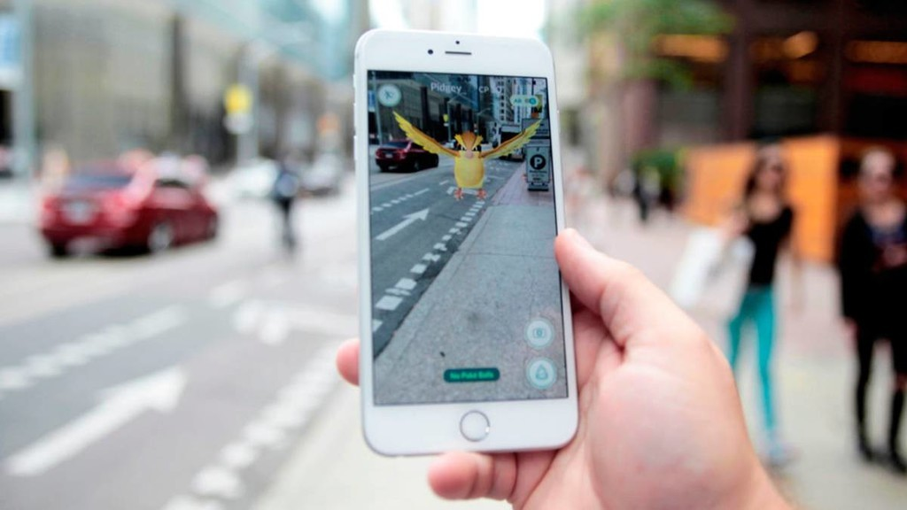
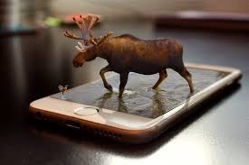

¿Qué es AR? La realidad aumentada es una versión mejorada e interactiva de un entorno del mundo real que se logra a través de elementos visuales digitales, sonidos y otros estímulos sensoriales mediante tecnología holográfica. AR incorpora tres características: una combinación de mundos digitales y físicos, interacciones realizadas en tiempo real e identificación 3D precisa de objetos virtuales y reales.
La realidad aumentada ofrece una mejor manera de diseñar, mantener y entregar instrucciones consumibles al superponer contenido digital en entornos de trabajo del mundo real. Cuando una empresa entiende qué es AR y cómo utilizarla con éxito, todos pueden trabajar de forma remota mientras colaboran eficientemente.
La realidad aumentada crea una experiencia inmersiva para todos sus usuarios. Aunque las formas de AR más comunes son a través de gafas o la lente de una cámara, el interés en AR está creciendo y las empresas están presentando más tipos de lentes y hardware en el mercado. Hay cinco componentes significativos de AR:
Inteligencia artificial. La mayoría de las soluciones de realidad aumentada necesitan inteligencia artificial (IA) para funcionar, lo que permite a los usuarios completar acciones mediante indicaciones de voz. AI también puede ayudar a procesar información para la aplicación AR. Software de realidad aumentada. Estas son las herramientas y aplicaciones utilizadas para acceder a AR. Algunas empresas pueden crear su propia forma de software AR. Procesamiento. Necesitará capacidad de procesamiento para que la tecnología AR funcione, generalmente aprovechando el sistema operativo interno del dispositivo. Lentes. Necesitará una lente o una plataforma de imagen para ver el contenido o las imágenes. Cuanto mejor sea la calidad de la pantalla, más realista parecerá la imagen. Sensores. Los sistemas AR necesitan digerir datos sobre su entorno para alinear los mundos real y digital. Cuando la cámara captura información, la envía a través de software para el procesamiento.
 